El Sprint 1 dejó el diseño: casos de uso, modelo entidad/relación y plan. El Sprint 2 entrega la aplicación funcionando, desplegada con Docker y probada contra una base de datos real. Hoy se puede abrir una web con HTTPS donde un cliente se registra, da de alta su vehículo, reserva, descarga el resguardo y entra y sale con la matrícula. La entrega tiene seis piezas, y cada una se comprueba por separado:
| Pieza | Dónde está | Cómo se comprueba |
|---|---|---|
| Aplicación web en marcha | docker compose up -d sobre el repositorio | https://localhost |
| Código fuente comentado | tarraco-parkings/, 37 archivos PHP en app/ | php -l, sin errores |
| Base de datos y modelo E/R | db/init.sql, 11 tablas y datos de ejemplo; docs/MODELO_LOGICO.md | tests/check_schema.py |
| Documentación técnica | docs/MANUAL_TECNICO.md, docs/MODELO_LOGICO.md, docs/INCIDENCIAS.md | lectura y tests/check_links.py |
| Manual de usuario | docs/MANUAL_USUARIO.md | lectura y recorrido con las capturas |
| Presentación y vídeo | docs/PRESENTACION.pptx, docs/VIDEO-DEMO.mp4 | reproducción |
Este documento une las seis piezas: qué hace el sistema, cómo está montado y qué se ha probado. Los manuales técnico y de usuario van aparte.
La aplicación gestiona reservas, cobros simulados y control de acceso simulado. No hay lectores de matrícula, ni barreras, ni red de los aparcamientos: el acceso se teclea en un formulario con sesión y el sistema decide, dejando traza. Quedan fuera del alcance la pasarela de pago real, el correo y la aplicación móvil.
Después de la exposición del Sprint 1, el profesorado hizo dos indicaciones que aquí se adoptan como requisitos por encima de la guía interna. La primera: retirar todo el hardware, sin controlar equipos ni red de los parkings. La segunda: enseñar las conexiones entidad/relación dentro de la planificación, no solo el modelo relacional.
Las dos se cumplen. DISPOSITIVO desaparece, REGISTRO_ACCESO pierde la
referencia al equipo y la barrera, y no hay diagramas de red ni de racks. El modelo lógico
completo, con cardinalidades, está en el apartado 4 y en docs/MODELO_LOGICO.md.
Hay tres formas de entrar al sistema y cada una ve cosas distintas. No son etiquetas: son sesiones separadas y permisos comprobados en el servidor, no en el menú.
| Rol | Dónde entra | Qué puede hacer |
|---|---|---|
| Cliente | /login.php |
Registrarse, gestionar sus datos y sus vehículos, reservar, descargar el resguardo, cancelar antes de empezar y mover sus matrículas en el control de acceso. |
| Administrador | /admin/login.php |
Ver y filtrar todas las reservas, modificarlas y cancelarlas, crear parkings con sus plazas y tarifas, retirar plazas, activar o desactivar clientes y consultar la auditoría. |
| Operador | /admin/login.php |
Consulta reservas, clientes y auditoría. No modifica nada: aunque fabrique el POST a mano,
requireRole() lo rechaza en el servidor y la acción no se ejecuta. |
El rol vive en la tabla ADMINISTRADOR, en la columna rol, con tres
valores: SUPERADMIN, ADMIN y OPERADOR. La comprobación la
hace Auth::requireRole() al principio de cada página de escritura, así que no
depende de que el enlace esté escondido.
El cliente hace siete pasos y cada uno deja un rastro en la base de datos. Este es el recorrido que se enseña en la exposición y el que graba el vídeo.
ACTIVA con una plaza asignada.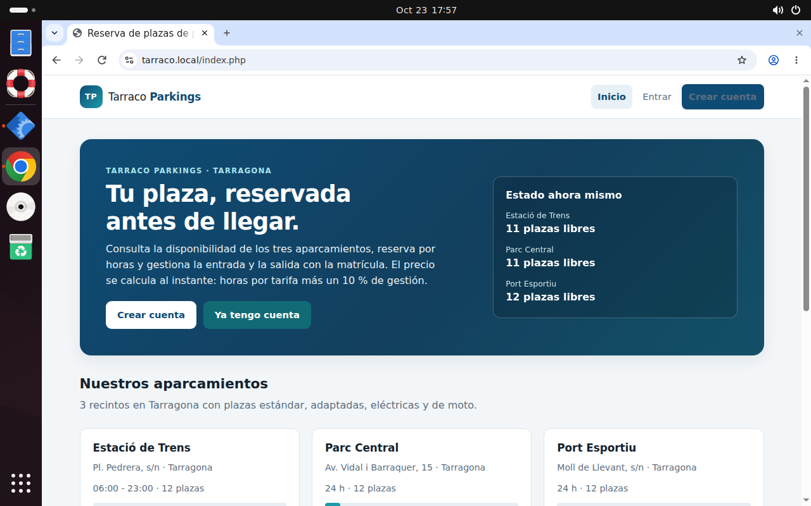
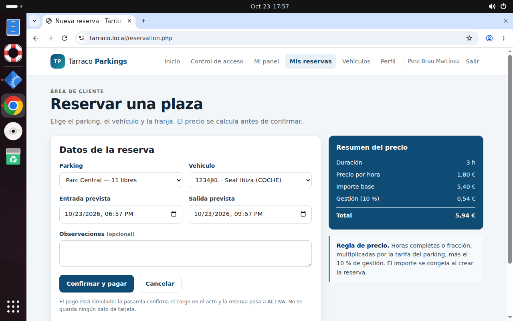
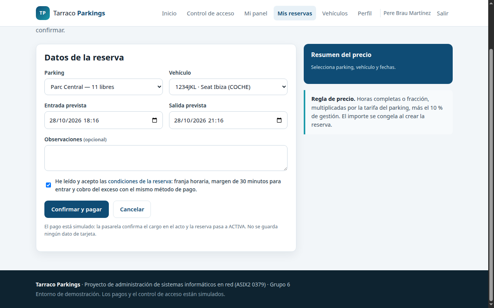
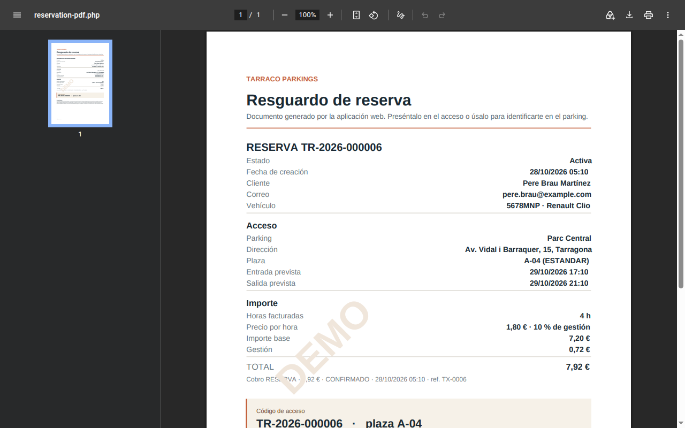
El administrador entra por una puerta distinta, /admin/login.php, y una sesión de
cliente no le sirve para nada. Su panel resume el día: reservas activas, entradas previstas,
clientes activos e ingresos confirmados.
Desde ahí puede crear un parking pidiendo solo el precio por hora. El alta genera en una transacción el parking, sus plazas y su tarifa general, de modo que el parking nuevo se puede reservar al instante. Antes del 23 de octubre nacía con capacidad y sin plazas, y por eso aparecía con «0 libres»: quedó corregido y con prueba que lo cubre.
En reservas puede filtrar por estado, parking o texto, modificar fechas y plaza, y cancelar
con reembolso. No hay ninguna opción de borrar, y no es un descuido de la interfaz: la base de
datos rechaza un DELETE sobre RESERVA aunque se intente desde fuera de
la aplicación.
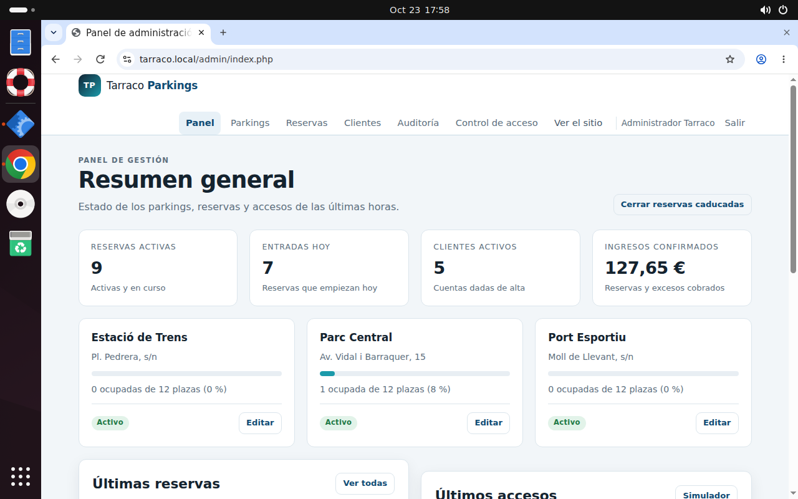
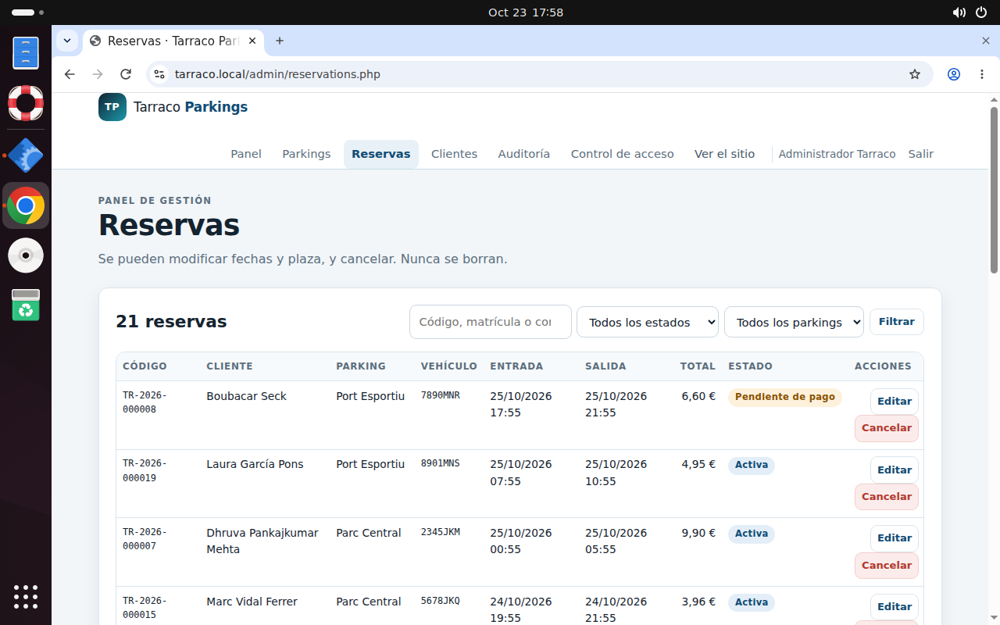
El operador existe para demostrar que la autorización no es binaria. Es el rol que consulta
sin tocar: ve las reservas y la auditoría, y si intenta cancelar o modificar un parking se le
rechaza la acción y vuelve al panel con un aviso, sin que nada cambie en la base de datos. La
comprobación está en el servidor, en requireRole(), y no en el HTML.
Lo que el operador no tiene es una pantalla propia. Comparte la del administrador con menos botones. Es una decisión consciente: el enunciado pide «gestión por parte de los administradores y otros roles», y un rol de solo lectura cumple esa frase sin multiplicar páginas que luego nadie usa.
RESERVA,
PLAZA y PAGO. Abierto a cualquiera permitía forzar entradas y cobros
sobre reservas ajenas. Ahora un cliente solo mueve sus matrículas y el administrador, cualquiera.
Todo el sistema se levanta con un comando y no hace falta instalar PHP, MariaDB ni nada más en la máquina. Son siete contenedores repartidos en dos ficheros de Docker Compose: el stack de la aplicación y el de monitorización.
| Contenedor | Imagen | Puerto | Función |
|---|---|---|---|
tarraco-app | php:8.2-apache | 80, 443 | Aplicación PHP y métricas |
tarraco-db | mariadb:10.11 | interno 3306 | Base de datos |
tarraco-phpmyadmin | phpmyadmin:5.2 | 8080 | Administración de la base |
tarraco-prometheus | prom/prometheus | 9090 | Recogida de métricas |
tarraco-grafana | grafana/grafana 11.2 | 3000 | Paneles |
tarraco-node-exporter | prom/node-exporter | 9100 | Métricas del servidor |
tarraco-cadvisor | gcr.io/cadvisor | 8082 | Métricas de los contenedores |
La aplicación se construye sobre php:8.2-apache con pdo_mysql,
mbstring y los módulos de reescritura, cabeceras y SSL. El único directorio que
Apache sirve es public/; config/, src/ y
templates/ quedan fuera por la directiva del VirtualHost.
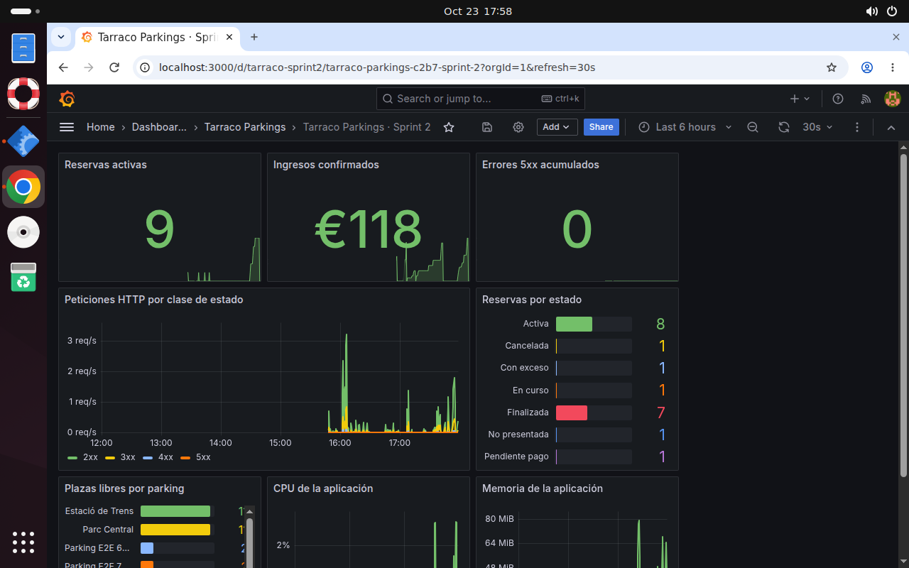
El sistema se ha probado en una máquina virtual Ubuntu 24.04.5 con 4 vCPU y 8 GB de memoria,
con el proyecto en /opt/tarraco-parkings. No es un servidor de producción: es el
entorno de demostración, y decir cuál es importa para que las cifras del apartado 7 se puedan
repetir.
sprint2-ubuntu, Ubuntu 24.04.5, 4 vCPU, 8 GB/opt/tarraco-parkings, docker compose up -d --buildhttps://127.0.0.1:8443, puerto reenviado de la VMtarraco_parkings, 11 tablasLos puertos del anfitrión no coinciden con los del contenedor porque la máquina virtual reenvía el 8443 al 443 y el 8081 al 8080. Cuando en este documento se cita un puerto, se dice cuál de los dos es.
El sitio entero va por HTTPS. El VirtualHost del puerto 80 responde con un 301 al 443, y
.htaccess refuerza la redirección para las rutas que pasan por reescritura.
El certificado es autofirmado y lo genera el contenedor al arrancar si certs/
está vacío. Cubre tarraco.local, localhost y 127.0.0.1,
que son los tres nombres con los que se prueba. El navegador avisa la primera vez porque la
autoridad no es pública; es el comportamiento esperado de un certificado de laboratorio.
# Genera la clave y el certificado con las tres identidades
bash scripts/gen-certs.sh
openssl req -x509 -newkey rsa:2048 -nodes -days 365 \
-keyout certs/tarraco.key -out certs/tarraco.crt \
-subj "/C=ES/ST=Tarragona/L=Tarragona/O=Tarraco Parkings/CN=tarraco.local" \
-addext "subjectAltName=DNS:tarraco.local,DNS:localhost,IP:127.0.0.1"
scripts/gen-certs.sh · líneas 9-26La copia se hace con una sola orden y produce un fichero comprimido con fecha en el nombre.
Se usa --single-transaction para no bloquear la base mientras copia, y se incluyen
rutinas y disparadores, que son parte del esquema y sin ellos la restauración queda coja.
bash scripts/backup.sh
# backups/tarraco_AAAAMMDD_HHMMSS.sql.gz
scripts/backup.sh · líneas 19-32La restauración está escrita en el manual técnico y se ha pensado para que se pueda hacer sin adivinar:
gunzip -c backups/tarraco_20261122_180000.sql.gz \
| docker compose exec -T db mariadb -u root -p"$DB_ROOT_PASSWORD" tarraco_parkings
docs/MANUAL_TECNICO.md · apartado 5.4La aplicación expone sus propias métricas en /metrics.php, en formato Prometheus.
No son capturas preparadas: los valores se leen de MariaDB en cada consulta de Prometheus, de
modo que el panel de Grafana enseña el estado real del sistema en ese momento.
| Métrica | Tipo | Qué mide |
|---|---|---|
tarraco_http_requests_total{class} | contador | Peticiones por clase 2xx, 3xx, 4xx y 5xx |
tarraco_reservas_activas | indicador | Reservas ACTIVA o EN_CURSO |
tarraco_reservas_estado{estado} | indicador | Reservas por estado |
tarraco_plazas_libres{parking} | indicador | Plazas disponibles por parking |
tarraco_ingresos_confirmados | indicador | Euros cobrados y confirmados |
Los cuatro objetivos de Prometheus se ven en UP: la propia instancia,
node-exporter, cadvisor y la aplicación. Grafana se aprovisiona sola al
arrancar, con un panel que enseña reservas, ingresos, errores y consumo de CPU y memoria.
El modelo tiene once entidades agrupadas por responsabilidad, no por orden de creación. Cada grupo se conecta con los demás por claves foráneas.
| Grupo | Entidades | Qué guarda |
|---|---|---|
| Cuentas | CLIENTE, VEHICULO, METODO_PAGO | Quién reserva, con qué coche y con qué paga |
| Oferta | PARKING, PLAZA, TARIFA | Qué se ofrece y a qué precio |
| Operación | RESERVA, PAGO, REGISTRO_ACCESO | Qué se contrata, qué se cobra y quién entra |
| Gestión | ADMINISTRADOR, REGISTRO_AUDITORIA | Quién manda y qué ha hecho |
La tabla central es RESERVA. Concentra cinco claves foráneas (cliente, vehículo,
parking, plaza y tarifa) y los importes congelados en el momento de crear. Alrededor de ella se
ordenan el cobro, el acceso y la auditoría.
Estas son las quince relaciones con su cardinalidad mínima y máxima. La columna de la izquierda es la entidad que tiene la clave foránea.
| Desde | Card. | Hacia | Significado |
|---|---|---|---|
VEHICULO.id_cliente | 1:N | CLIENTE | Un cliente tiene de uno a varios vehículos |
METODO_PAGO.id_cliente | 1:N | CLIENTE | Un cliente puede tener varios métodos |
PLAZA.id_parking | 1:N | PARKING | Un parking tiene una o muchas plazas |
TARIFA.id_parking | 1:N | PARKING | Un parking tiene una o muchas tarifas, con vigencia |
RESERVA.id_cliente | 1:N | CLIENTE | Un cliente tiene cero o muchas reservas |
RESERVA.id_vehiculo | 1:N | VEHICULO | Un vehículo acumula cero o muchas reservas |
RESERVA.id_parking | 1:N | PARKING | Un parking recibe cero o muchas reservas |
RESERVA.id_plaza | 1:N | PLAZA | Opcional: una plaza puede no estar asignada todavía |
RESERVA.id_tarifa | 1:N | TARIFA | La tarifa aplicada queda fijada en la reserva |
PAGO.id_reserva | 1:N | RESERVA | Una reserva puede tener el cobro y el exceso |
PAGO.id_metodo_pago | 1:N | METODO_PAGO | Un método puede cobrar varios pagos |
REGISTRO_ACCESO.id_parking | 1:N | PARKING | Cada parking registra sus movimientos |
REGISTRO_ACCESO.id_vehiculo | 1:N | VEHICULO | Un vehículo puede tener muchos accesos |
REGISTRO_ACCESO.id_reserva | 1:N | RESERVA | Opcional: un intento puede no corresponder a ninguna |
REGISTRO_AUDITORIA.id_admin | 1:N | ADMINISTRADOR | Cada acción del panel queda atribuida a quien la hizo |
El diagrama enseña las entidades y sus conexiones, que es lo que faltaba en la exposición del
Sprint 1. La versión con todos los atributos de cada tabla está en el anexo de
docs/MODELO_LOGICO.md.
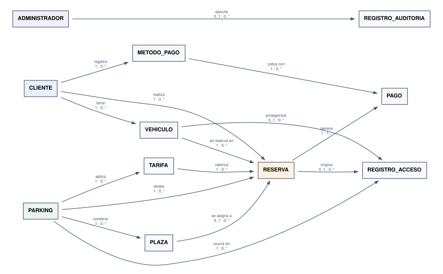
Las reglas que no se pueden saltar están donde no se pueden esquivar: en MariaDB. Un programa mal escrito o una consola abierta se encuentran la misma barrera que la web.
ON DELETE RESTRICT. No se puede borrar un
cliente que tiene reservas, ni un parking con plazas.CHECK de fechas, importes, precios y capacidades: una
salida anterior a la entrada no entra en la base.DELETE sobre RESERVA aborta
con el error 45000 y el mensaje «Las reservas no se borran nunca».FINALIZADA no se vuelve a ningún sitio.CREATE TRIGGER trg_reserva_transicion BEFORE UPDATE ON RESERVA
FOR EACH ROW
BEGIN
IF OLD.estado <> NEW.estado THEN
IF NOT (
(OLD.estado = 'PENDIENTE_PAGO' AND NEW.estado IN ('ACTIVA','CANCELADA'))
OR (OLD.estado = 'ACTIVA' AND NEW.estado IN ('EN_CURSO','CANCELADA','NO_PRESENTADA'))
OR (OLD.estado = 'EN_CURSO' AND NEW.estado IN ('FINALIZADA','CON_EXCESO'))
) THEN
SIGNAL SQLSTATE '45000'
SET MESSAGE_TEXT = 'Transicion de estado de reserva no permitida.';
END IF;
END IF;
END$$
db/init.sql · líneas 611-628El modelo aprobado se mantiene. Los cambios son seis y cada uno tiene un motivo escrito en
docs/DECISIONES-SPRINT2.md.
| Cambio | Motivo |
|---|---|
Fuera DISPOSITIVO | No hay ningún equipo que identificar: lo pidió el profesorado |
Fuera barrera_abierta | No hay barrera que controlar |
Entran ADMINISTRADOR y REGISTRO_AUDITORIA | El panel necesita cuentas propias y traza de lo que se hace |
Entra condiciones_aceptadas | El enunciado pide aceptar las condiciones antes de confirmar, y hay que poder demostrarlo |
PLAZA.estado sin RESERVADA | La reserva ya dice qué plaza está ocupada en cada franja; dos verdades acaban en contradicción |
| Siete estados de reserva | EN_CURSO y NO_PRESENTADA hacen falta para el control de acceso |
Los importes se congelan al crear la reserva: una subida de tarifa no reescribe lo cobrado.
El proyecto son 37 archivos PHP y unas 5.900 líneas, organizadas en capas. No hay framework: hay una clase por concepto y un autocargador que resuelve el nombre del archivo.
app/
public/ ● lo único que Apache sirve: páginas y endpoints
src/ ● lógica: Auth, Reservation, Payment, AccessControl, Pdf…
config/ ● credenciales y parámetros, fuera del alcance de Apache
templates/ ● cabecera, navegación y pie comunes
docker/ ● VirtualHost con SSL y punto de entrada
db/init.sql ● DDL, datos de ejemplo, disparadores
monitor/ ● Prometheus y el panel de Grafana
tests/ ● cinco suites ejecutablesLa separación importa: una página de public/ valida la entrada, llama a una clase
de src/ y pinta la plantilla. Ninguna consulta SQL se escribe en la vista. Esa regla
es la que permite que las pruebas de cálculo se ejecuten sin base de datos.
El problema real de una reserva es que dos clientes no reciban la misma plaza. La solución no
es comprobar antes de insertar, porque entre la comprobación y el INSERT cabe otra
petición. La plaza se busca y se bloquea dentro de la misma transacción.
// Dentro de Database::transaction(), con la plaza bloqueada por FOR UPDATE
$plaza = Parking::plazaDisponible(
(int) $parking['id_parking'],
$tipos,
$entrada,
$salida,
$pdo
);
if ($plaza === null) {
throw new DomainException(
'No quedan plazas libres de este tipo en la franja seleccionada.'
);
}
$horas = Payment::horasFacturables($entrada, $salida);
$importes = Payment::calcular(
(float) $tarifa['precio_hora'],
(float) $tarifa['porcentaje_gestion'],
$horas
);
app/src/Reservation.php · líneas 150-176La búsqueda de plaza libre usa NOT EXISTS contra las reservas que ocupan franja y
FOR UPDATE para que la fila quede bloqueada hasta el final de la transacción. Si no
hay plaza, se lanza una excepción y no se crea nada: ni reserva, ni pago, ni plaza asignada.
La reserva nace en PENDIENTE_PAGO, se registra el cobro simulado y pasa a
ACTIVA dentro de la misma transacción. Si el cobro fallara, se quedaría pendiente y
la plaza se liberaría al caducar el bloqueo de quince minutos.
El cálculo es una función pura, sin base de datos, y por eso se puede probar entera. La regla es la del enunciado: horas completas o fracción, con un mínimo de una, y un 10 % de gestión sobre el importe base.
public static function calcular(float $precioHora, float $porcentajeGestion, int $horas): array
{
$base = round($precioHora * $horas, 2);
$gestion = round($base * $porcentajeGestion, 2);
return [
'horas' => $horas,
'base' => $base,
'gestion' => $gestion,
'total' => round($base + $gestion, 2),
];
}
app/src/Payment.php · líneas 33-54Las horas facturables se calculan con ceil sobre los minutos y un mínimo de una.
Una reserva de 8:00 a 10:30 son 3 horas, no 2,5. El exceso funciona igual pero con quince
minutos de gracia y sin el 10 % de gestión, porque no hay servicio que gestionar: solo tiempo
extra.
| Caso | Cálculo | Resultado |
|---|---|---|
| 4 horas a 1,80 €/h | 7,20 + 0,72 | 7,92 € con gestión incluida |
| 30 minutos a 1,80 €/h | 1 hora × 1,80 | 1,80 € de base, mínimo una hora |
| Salida 2 h 20 min tarde, 15 min de gracia | 125 − 15 = 110 min → 2 h | 2 horas de exceso, sin gestión |
| Salida 10 min tarde | dentro de la gracia | 0 € de exceso |
La entrada se autoriza con cuatro condiciones encadenadas: el vehículo existe, la matrícula
es de la cuenta que la teclea (o de cualquiera, si es el administrador), hay una reserva
ACTIVA en ese parking y la hora cae dentro de la franja con treinta minutos de
margen. Cualquier intento se registra, autorizado o no, con su motivo.
// Un vehículo no puede estar dentro de dos parkings a la vez
$dentro = $pdo->prepare(
"SELECT id_parking FROM RESERVA
WHERE id_vehiculo = :vehiculo AND estado = 'EN_CURSO' LIMIT 1"
);
$dentro->execute(['vehiculo' => (int) $vehiculo['id_vehiculo']]);
if ($parkingDentro !== false) {
$id = self::registrar($pdo, $idParking, (int) $vehiculo['id_vehiculo'], null,
$placa, 'ENTRADA', false, 'El vehículo ya consta dentro de un parking.');
return ['ok' => false, 'mensaje' => 'El vehículo ya consta dentro de un parking.'];
}
app/src/AccessControl.php · líneas 56-72La salida cobra el exceso con el método de pago de la reserva y lo registra como un pago
aparte, de tipo EXCESO. La reserva pasa a CON_EXCESO o a
FINALIZADA según haya retraso o no.
El enunciado pide un número de reserva y un PDF para acceder al parking. El PDF se genera al vuelo con los datos de la reserva, no se guarda en disco, y solo lo puede descargar su dueño o un administrador con sesión abierta.
No hay librería de PDF en el contenedor y no la puede haber: solo se instalan
pdo_mysql y mbstring, y el aula no tiene red para traer Composer. Escribí
un generador mínimo, de unas 300 líneas, que hace lo que hace falta para un documento de una
página.
// WinAnsi es la codificación que entienden las fuentes estándar del PDF.
// Sin esta conversión, las tildes y el euro salen como bytes sueltos.
private static function aWinAnsi(string $texto): string
{
$convertido = @iconv('UTF-8', 'Windows-1252//TRANSLIT', $texto);
return $convertido === false ? $texto : $convertido;
}
app/src/Pdf.php · líneas 79-86Lo que el generador resuelve, y que se nota cuando falta: las anchuras reales de Helvetica para partir las líneas y alinear los importes a la derecha, la conversión a WinAnsi y la numeración de páginas. El resguardo lleva el código de reserva, la plaza, la franja, el desglose del importe, los cobros con su referencia y la marca de las condiciones aceptadas.
/reservation-pdf.php desde los
datos reales de una reserva creada en la prueba de extremo a extremo.Las decisiones de seguridad están tomadas en el servidor y se pueden enumerar sin adornos.
La revisión del 21 de octubre encontró el defecto que habría roto el flujo principal: la
consulta de plaza libre tenía los parámetros posicionales desordenados y no se habría podido
crear ninguna reserva. Se pasó a marcadores con nombre y tests/check_sql_params.php
vigila las 99 consultas del proyecto.
| Riesgo | Cómo se cubre |
|---|---|
| Contraseñas | password_hash() con bcrypt y coste 12; nunca se guarda en claro ni se escribe en el registro |
| Sesiones | Cookie HttpOnly, Secure con HTTPS, SameSite=Lax y regeneración del identificador al entrar |
| CSRF | Token en todos los formularios que escriben, comparado con hash_equals |
| Inyección SQL | PDO con sentencias preparadas reales y marcadores con nombre; ATTR_EMULATE_PREPARES en falso |
| XSS | Toda salida pasa por e(), que aplica htmlspecialchars con ENT_QUOTES |
| Autorización | Sesiones separadas de cliente y administrador, y requireRole() en cada escritura |
| Datos de tarjeta | No se guardan. El método solo contiene una referencia de pasarela simulada |
| Cabeceras | X-Content-Type-Options, X-Frame-Options y Referrer-Policy |
La planificación del Sprint 1 se hizo con Trello y un diagrama de Gantt de cinco semanas. Para el Sprint 2 se mantiene la misma herramienta y se actualiza el plan con lo que ha pasado de verdad: dos tareas nuevas por exigencias del enunciado, una tarea retirada por la indicación del profesorado y una duración real mayor que la prevista en las pruebas.
El tablero usa las columnas de siempre (por hacer, en curso, en revisión y hecho), una etiqueta de prioridad por tarjeta y un responsable por tarjeta. Las tarjetas son las mismas tareas que aparecen en el Gantt, con el mismo código, para que no haya dos listas que se contradigan.
El reparto sigue los roles que salieron de la prueba de personalidad del curso, y es el mismo que se aprobó en el Sprint 1. Cambia el contenido de las tareas, no quién las hace.
| Cód. | Tarea | Resp. | Prior. | Estado |
|---|---|---|---|---|
| 4.1 | Modelo relacional y DDL completo | DM | P1 | Hecha |
| 4.2 | Diseño de interfaz y hoja de estilos propia | BS | P1 | Hecha |
| 4.3 | Servidor Apache + PHP + MariaDB con Docker y SSL | PB | P1 | Hecha |
| 5.1 | Autenticación, registro, perfil y sesiones separadas | DM | P1 | Hecha |
| 5.2 | Vehículos y métodos de pago | BS | P1 | Hecha |
| 6.1 | Motor de precios, tarifas con vigencia y cálculo del exceso | DM | P1 | Hecha |
| 6.2 | Resguardo PDF de la reserva | BS | P1 | Hecha el 28/10 |
| 6.3 | Condiciones de la reserva y aceptación con marca de tiempo | BS | P1 | Hecha el 28/10 |
| 7.1 | Parkings, plazas y tarifas desde el panel | PB | P1 | Hecha |
| 8.1 | Control de acceso por matrícula, entrada y salida | PB | P1 | Hecha |
| 9.1 | Seguridad, copias de seguridad y monitorización | PB | P2 | Hecha |
| 10.1 | Pruebas, corrección de defectos y auditoría del código | Todos | P1 | Hecha el 29/10 |
| 10.2 | Manual técnico y manual de usuario | BS | P2 | Hechos |
| 10.3 | Documento de presentación | PB | P1 | Hecho el 28/10 |
| 11.1 | Presentación y vídeo de demostración | Todos | P1 | Hecha el 28/10 |
| 11.2 | Ensayo, revisión final y entrega | Todos | P1 | Hecha el 29/10 |
La tarea 7.2 del plan original, «inventario de dispositivos instalados», se ha eliminado. No se puede inventariar un equipo que ya no forma parte del sistema.
El diagrama cubre las siete semanas del sprint, del 9 de octubre al 22 de noviembre. Cada barra es una tarea, el color indica quién la hace y la columna de la derecha dice en qué punto está hoy.
|
9-15 oct16-22 oct23-29 oct30 oct-5 nov
6-12 nov13-19 nov20-22 nov
|
|||
|---|---|---|---|
| Tarea | Resp. | Semanas | Estado |
| Fase 4 · Diseño técnico y despliegue | PB | ||
| 4.1 Modelo relacional y DDL | DM | Hecha | |
| 4.2 Diseño de interfaz | BS | Hecha | |
| 4.3 Servidor LAMP, Docker y SSL | PB | Hecha | |
| Fase 5 · Módulo de usuarios | DM · BS | ||
| 5.1 Autenticación, perfil y sesiones | DM | Hecha | |
| 5.2 Vehículos y métodos de pago | BS | Hecha | |
| Fase 6 · Reservas y precios | DM · BS | ||
| 6.1 Motor de precios y tarifas | DM | Hecha | |
| 6.2 Resguardo PDF de la reserva | BS | Hecha | |
| 6.3 Condiciones y aceptación | BS | Hecha | |
| Fase 7 y 8 · Administración y acceso | PB | ||
| 7.1 Parkings, plazas y tarifas | PB | Hecha | |
| 8.1 Control de acceso por matrícula | PB | Hecha | |
| Fase 9 · Seguridad y operación | PB | ||
| 9.1 Seguridad, copias y monitorización | PB | Hecha | |
| Fase 10 · Validación y documentación | Todos | ||
| 10.1 Pruebas y corrección de defectos | Todos | Hecha | |
| 10.2 Manual técnico y de usuario | BS | Hechos | |
| 10.3 Documento de presentación | PB | Hecho | |
| Fase 11 · Exposición y entrega | Todos | ||
| 11.1 Presentación y vídeo | Todos | Hecha | |
| 11.2 Ensayo y entrega | Todos | Hecha | |
Azul: Pere Brau · Lila: Dhruva Mehta · Verde: Boubacar Seck · Naranja: todo el grupo.
El camino crítico pasa por 4.1 (modelo y DDL) y 4.3 (servidor), porque ninguna otra tarea puede empezar sin base de datos ni sin sitio donde ejecutarla. Las dos se resolvieron en la primera semana, y por eso las pruebas pudieron empezar el 20 de octubre y no el 5 de noviembre.
El plan se cumplió en las tareas de producto y se desvió en dos cosas. Las dos están
registradas en docs/INCIDENCIAS.md con su ficha.
El resto de desviaciones son de fecha, no de alcance: la revisión completa del código se hizo el 21 de octubre, las capturas el 23 y la presentación y el documento se cerraron el 28. La entrega está abierta hasta el 22 de noviembre, así que ninguna de las tres llega tarde.
Todo lo que sigue se ha ejecutado el 28 de octubre sobre la máquina virtual, con el stack
levantado desde cero: docker compose down -v y up -d --build. La base se
recreó desde db/init.sql, así que las cifras no arrastran pruebas anteriores. Después
de esa pasada se corrigieron cuatro cosas en el código, y las dos suites se repitieron el 29 de
octubre con el volumen borrado y la base sembrada de nuevo: los totales no bajaron. El detalle
de las dos pasadas está en docs/VERIFICACION-SPRINT2.md, §4.1.
| Prueba | Dónde se ejecuta | Resultado |
|---|---|---|
scripts/smoke-test.sh | dentro de la VM | 19/19 correctas |
tests/e2e_client.py | desde el portátil contra el 8443 | 53/53 correctas |
tests/pricing_test.php | sin base de datos | 22 comprobaciones correctas |
tests/check_schema.py | sobre db/init.sql | 11 tablas, 15 claves foráneas, esquema válido |
tests/check_sql_params.php | sobre app/src | 99 consultas, ningún marcador huérfano |
tests/check_links.py | sobre el repositorio | 96 referencias, todas resuelven |
php -l sobre los 37 archivos de app/ | sin base de datos | 0 errores de sintaxis |
El smoke test comprueba cuatro bloques: contenedores, HTTPS y redirección, base de datos y
monitorización. La parte de integridad de la base es la que más vale,
porque compara los importes de todas las reservas con su tarifa, verifica que ninguna salida
tardía se quedó sin cobrar el exceso y confirma que el disparador rechaza un
DELETE.
La prueba de extremo a extremo recorre nueve bloques: páginas públicas, alta de cuenta y sesión, reserva con precio, control de acceso de entrada y salida, aislamiento entre clientes, panel de administración, alta de un parking, retirada de una plaza y métricas. Crea datos propios en cada pasada, de modo que se puede repetir sin limpiar la base.
PAGO con RESERVA y el dato está corregido.
Esta es la lectura del enunciado del Sprint 2 y dónde se cumple cada punto. Es la tabla que conviene mirar si solo se quiere comprobar si falta algo.
| Lo que pide el enunciado | Estado | Dónde |
|---|---|---|
| Apache2 con PHP | Cumple | app/Dockerfile, docker-compose.yml |
| MySQL o MariaDB y phpMyAdmin | Cumple | tarraco-db, tarraco-phpmyadmin |
| Certificado SSL | Cumple | VirtualHost 443, scripts/gen-certs.sh |
| Monitorización del servidor | Cumple | Prometheus, Grafana, node-exporter, cAdvisor |
| Página de inicio con información de los parkings | Cumple | public/index.php |
| Formulario de reserva | Cumple | public/reservation.php |
| Datos del cliente y del vehículo | Cumple | register.php, vehicles.php, profile.php |
| Cálculo automático del precio | Cumple | src/Payment.php, cálculo en vivo con quote.php |
| Gestión por administradores y otros roles | Cumple | public/admin/, roles ADMIN y OPERADOR |
| El cliente se tiene que registrar para actuar | Cumple | Auth::checkAuth() en todas las páginas de cliente |
| Planificación del proyecto actualizada | Cumple | Apartado 6 de este documento |
| Manual de usuario | Cumple | docs/MANUAL_USUARIO.md |
| Documentación técnica con tecnologías y código | Cumple | docs/MANUAL_TECNICO.md, apartados 1 a 6 y 12 |
| Presentación con roles, servicios, copias y monitorización | Cumple | docs/PRESENTACION.pptx, diapositivas 4, 5 y 10 a 14 |
| Planificación y reparto de tareas en la presentación | Cumple | Diapositiva 15 y apartado 6 |
| Modelo E/R actualizado | Cumple | Apartado 4.3 y diapositivas 6 y 7 |
| Bibliografía | Cumple | Apartado 8 y diapositiva 17 |
| Declaración de IA con partes y prompts | Cumple | Apartado 9 y diapositiva 17 |
| Número de reserva y PDF para el acceso | Cumple | public/reservation-pdf.php, apartado 5.5 |
| Aceptación de condiciones antes de confirmar | Cumple | public/condiciones.php, columna condiciones_aceptadas |
| Enlace o IP para probar la aplicación | Cumple | El despliegue con Docker del repositorio; en la VM, https://127.0.0.1:8443 |
Estas cosas no están probadas o no están hechas, dichas antes de que las pregunte nadie.
Ninguno de los tres límites afecta a lo que el enunciado pide, y los tres tienen una salida concreta. Se apuntan aquí para que no parezcan olvidos:
time docker compose up -d --build.La lista de lo que se ha ejecutado de verdad, con su fecha y su resultado, está en
docs/VERIFICACION-SPRINT2.md; este apartado es la otra cara de esa lista.
Todo lo que sigue se ha consultado durante el sprint y se puede abrir. Las referencias están agrupadas por para qué se usaron, no por orden alfabético.
Projecte/Projecte Sprint2/instruccions.txt.La IA se ha usado como herramienta de apoyo, tal como pide el enunciado. Aquí queda qué agente, qué modelo, qué partes y con qué instrucciones. No hay un modelo por defecto: cada sesión se registra con el que se usó de verdad.
| Fase | Herramienta | Qué se hizo con ella |
|---|---|---|
| Sprint 1 | opencode con SpaceBunnyFree |
Redacción del documento de presentación y de las presentaciones del Sprint 1 |
| Desarrollo del Sprint 2 (9 a 26 de octubre) |
Sesiones de agente sin modelo registrado en el repositorio | Estructura del proyecto, clases de dominio, vistas, pruebas y manuales. El detalle de
lo que se corrigió está en docs/INCIDENCIAS.md, que no anota el modelo |
| Cierre del 28 de octubre | codewhale con deepseek-v4-flash |
Resguardo PDF, condiciones de la reserva, revisión cruzada de la documentación, corrección de cifras, este documento y la actualización de la presentación |
| Revisión final del 29 de octubre | codewhale; el modelo de esta sesión no quedó registrado |
Contraste de cada cifra contra el árbol, estado real de la planificación, mapa del código del manual técnico y regeneración del documento, la presentación y el ZIP |
| Parte | Quién la ha hecho |
|---|---|
| Idea del proyecto, alcance y decisiones de negocio | El grupo. La IA no decidió qué se construye |
| Diseño del modelo de datos y de los casos de uso | El grupo, con la IA como revisora |
| Código PHP, SQL, HTML y CSS | Escrito con la IA a partir de las decisiones del grupo, y revisado línea a línea antes de darlo por bueno |
| Pruebas automáticas | Escritas con la IA, ejecutadas y leídas por el grupo |
| Manuales y este documento | Redactados con la IA a partir de datos comprobados en el repositorio |
| Presentación y vídeo | Generador escrito con la IA; el vídeo se grabó contra la aplicación real |
| Verificación final | Ejecutada en la máquina virtual. Las cifras del apartado 7 son salida de las pruebas, no estimaciones |
Los enunciados están resumidos, pero conservan lo que se pidió y las condiciones. Todos incluyen la misma restricción: no inventar resultados.
ruta:línea. Revisa roles, registro, reserva con precio, PDF de la
reserva, aceptación de condiciones, control de acceso, panel de administración y
monitorización. Si algo no se puede probar, dilo como no probado en vez de suponerlo.»El registro de lo corregido, con fecha y motivo, está en docs/INCIDENCIAS.md y
docs/DECISIONES-SPRINT2.md.
Las capturas son reales, hechas sobre la aplicación en marcha y revisadas una a una contra lo que dicen los pies. Las del 23 de octubre salen del framebuffer de la máquina virtual; las tres últimas se tomaron el 28 de octubre conduciendo Chrome contra el puerto reenviado.
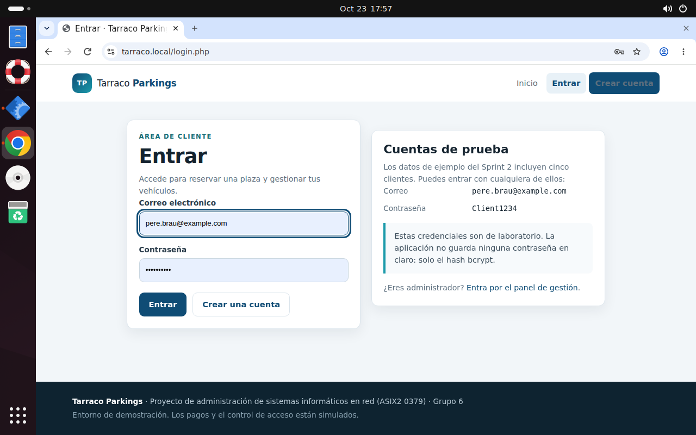
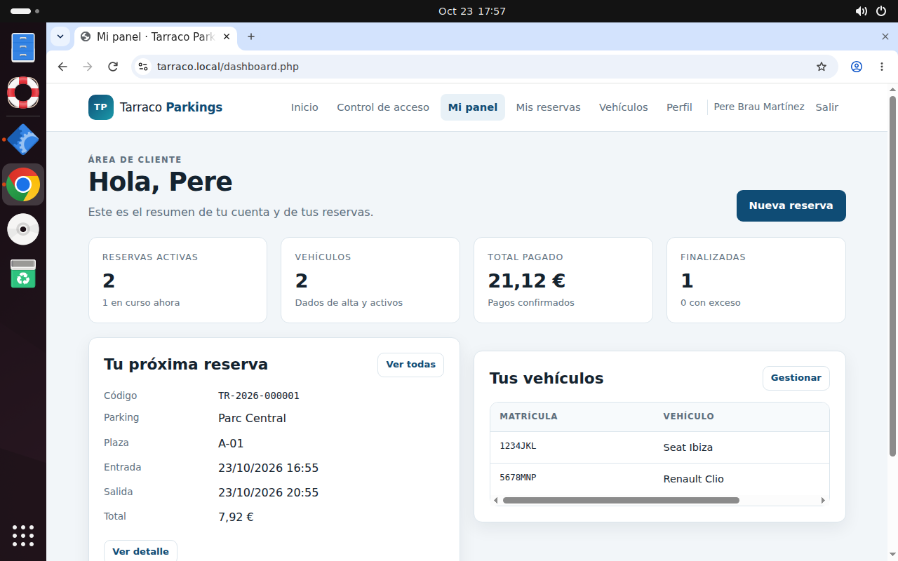
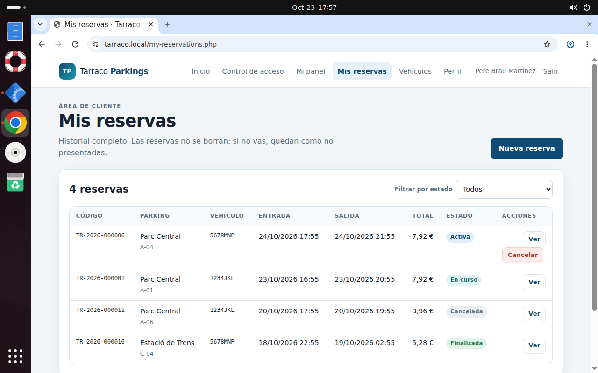
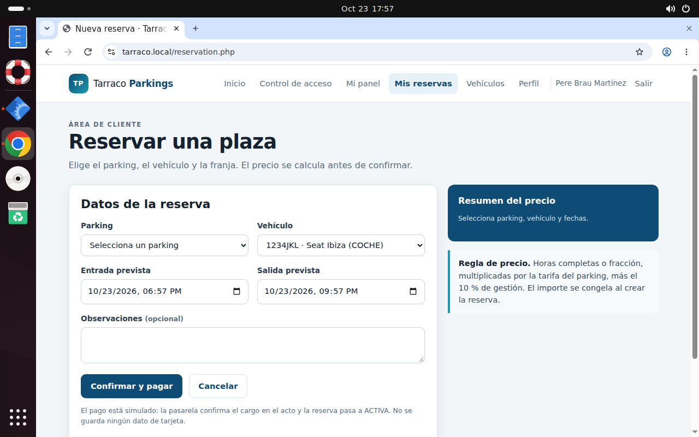
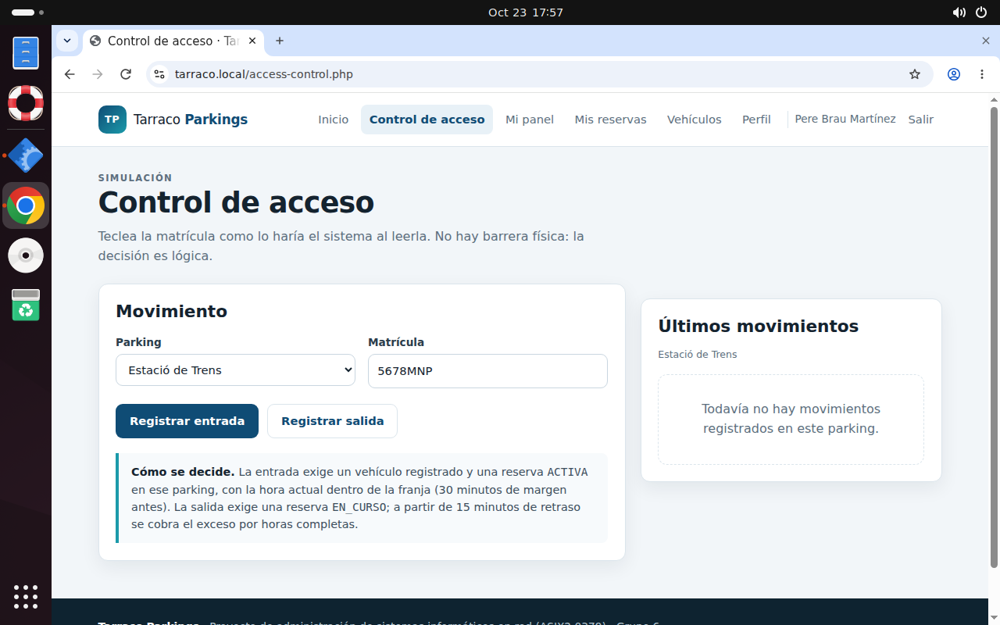
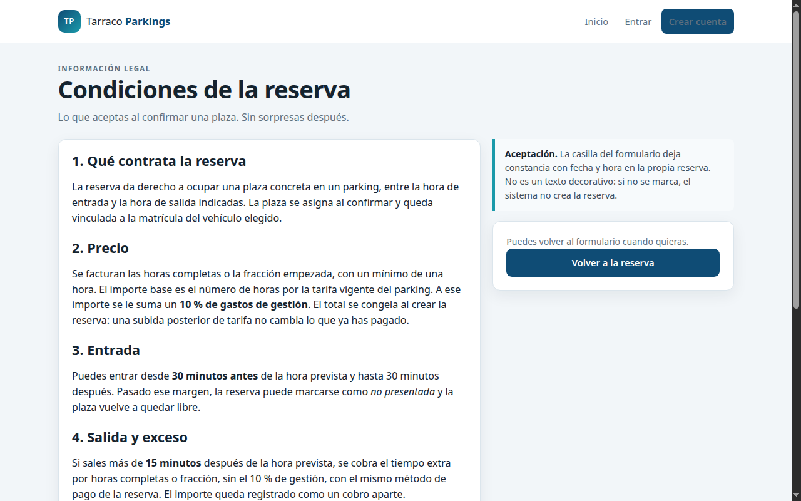
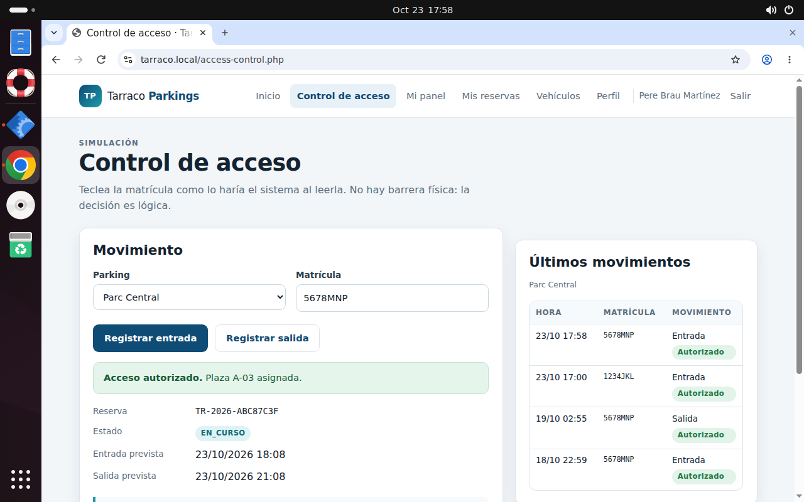
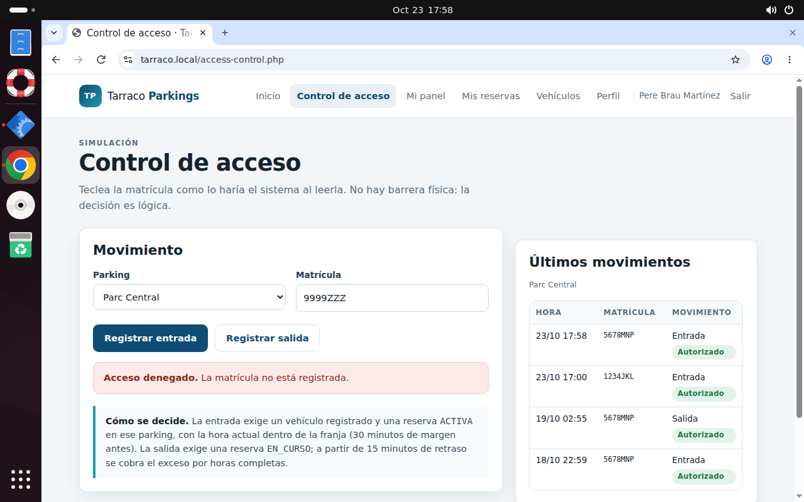
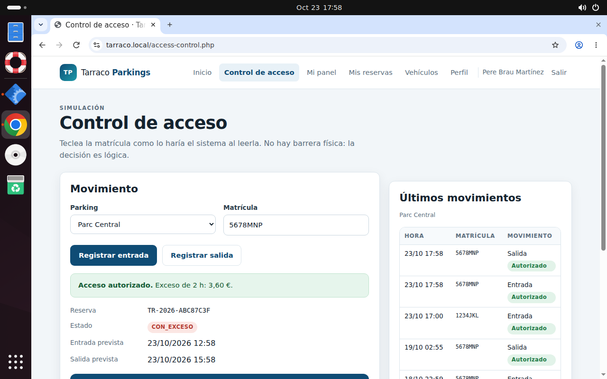
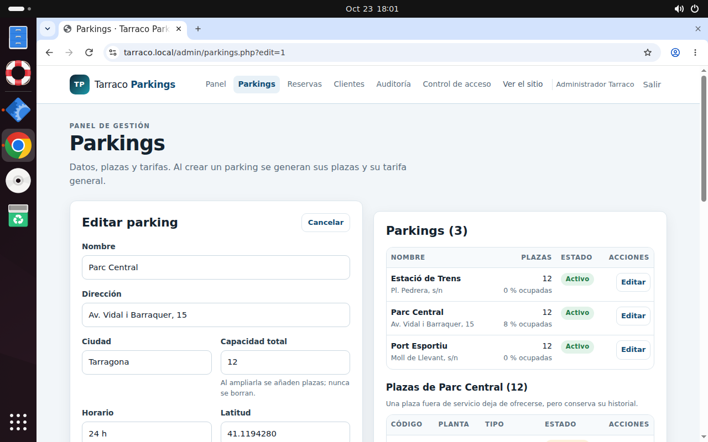
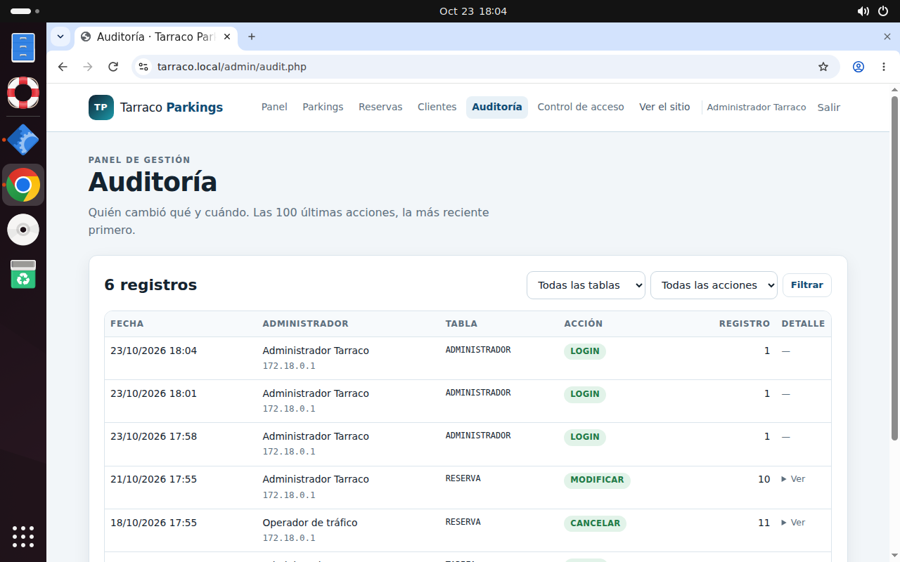
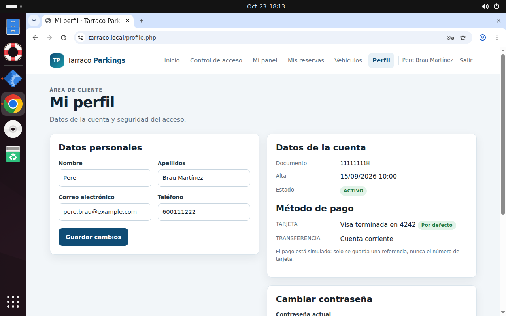
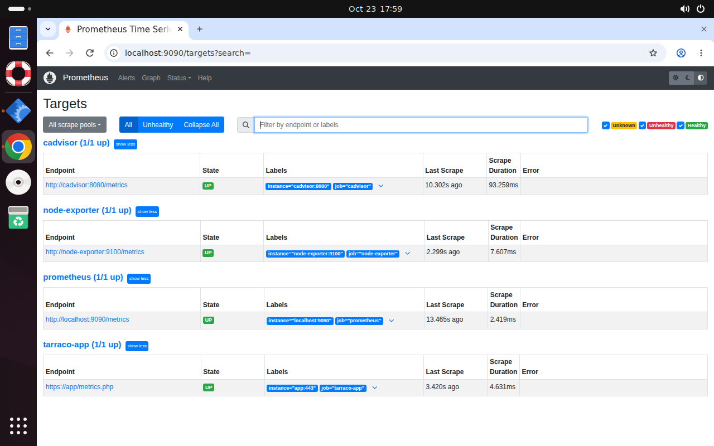
UP.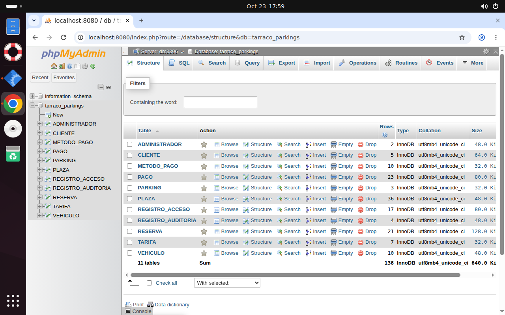
La exposición dura diez minutos y sigue el orden de la presentación. Cada fila es una diapositiva, con lo que se proyecta y lo que se dice. El vídeo cubre la demo para no depender de que la red funcione el día de la presentación.
| # | Qué se proyecta | Qué se dice |
|---|---|---|
| 1 | Portada | Somos el grupo 6. En el Sprint 1 presentamos el diseño; en el Sprint 2, la aplicación que funciona. |
| 2 | Qué cambia | No hemos empezado de cero: el modelo aprobado es la base. Lo que cambia es que ahora hay código, base de datos y contenedores. |
| 3 | Alcance: solo software | Retiramos todo el hardware, como pidió el profesorado. El control de acceso es una simulación y lo explicamos aquí para que no parezca que falta. |
| 4 | Los tres roles | Cliente, administrador y operador. Cada uno tiene su sesión y sus permisos, y se comprueban en el servidor. |
| 5 | Arquitectura | Siete contenedores en dos ficheros de Compose. Todo se levanta con un comando. |
| 6 | Once entidades | El modelo no es un listado de tablas: cada bloque tiene una responsabilidad. |
| 7 | Las quince relaciones | Esta es la diapositiva que responde a la segunda indicación: las conexiones y las cardinalidades. |
| 8 | Decisiones del modelo | Cada cambio respecto al Sprint 1 tiene un motivo, no es una preferencia. |
| 9 | Integridad | La garantía está en la base de datos: un DELETE de reserva se rechaza. |
| 10 | Flujo de reserva | La plaza se bloquea con FOR UPDATE: dos clientes no reciben la misma. |
| 11 | Precio, exceso y resguardo | Horas completas o fracción, 10 % de gestión, y un PDF con el código de acceso. |
| 12 | Control de acceso | Entrada, salida y denegación con motivo. Todo queda registrado. |
| 13 | Panel de administración | No puede borrar reservas: modifica y cancela. La traza se escribe desde diez puntos del código. |
| 14 | Monitorización | Prometheus recoge y Grafana enseña, con métricas de negocio leídas de MariaDB. |
| 15 | Planificación y Gantt | Dieciséis tareas, tres responsables y una tarea retirada por la indicación del profesorado. |
| 16 | Verificación | 19/19 dentro de la VM, 53/53 desde el portátil, y decimos dónde se hizo cada cosa. |
| 17 | Bibliografía e IA | Las fuentes, y la declaración de qué se hizo con IA y con qué prompts. |
| 18 | Cierre | La aplicación está construida, arrancada y probada. El vídeo enseña el recorrido completo. |